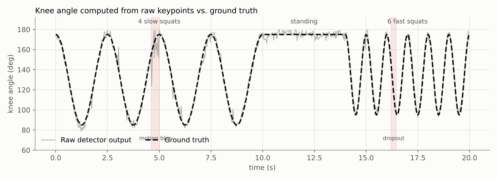

Pose Landmark Trajectories
2.1 Representing a joint as (x, y) or (x, y, z)
For a video with frames at times t0, t1, …, joint j becomes the sequence
pj(tk) = ( xj,k, yj,k [, zj,k] ), with confidence cj,k ∈ [0, 1]MediaPipe gives x and y normalized to [0, 1] by image width and height, and z as a depth relative to the hips, in roughly the same scale as x [3]. It also returns world landmarks in meters centered on the hips. Two practical choices matter for filtering:
- Filter each coordinate separately. Every filter in this tutorial is a 1D filter. A full skeleton of 33 landmarks × 2 coordinates means 66 independent filter instances. This is cheap and easy to reason about, but it ignores the fact that bones have fixed length (see Section 10).
- Normalize scale. A person 2 m from the camera has keypoints that move four times as far in pixels as the same person 4 m away. If filter parameters are in pixels, they will behave differently at different distances. Dividing by a body length (torso or hip-to-ankle) or by a fixed bounding box, as Ullah et al. do [4], makes the parameters transferable.
2.2 Landmark confidence scores
Each landmark comes with a score that says how much the network trusts it. In MediaPipe, presence is the likelihood that the landmark is in the image at all, and visibility is the likelihood that it is in the image and not occluded [3]. YOLO-pose and OpenPose output a single per-keypoint confidence.
Confidence is the most useful extra input a filter can get, because it tells the filter which frames are noisy. Two ways to use it:
- Hard gate: if c < threshold (often 0.5), treat the keypoint as missing. Simple, but throws away partially useful data.
- Soft weight: keep the measurement but trust it less. In a Kalman filter this means increasing the measurement noise, e.g. Rk = R / ck². This is what the Kalman filter in our experiment does (Section 5).
2.3 Velocity and acceleration of keypoints
Velocity and acceleration are estimated by finite differences:
vk ≈ (pk − pk−1) / Δt (backward, causal) vk ≈ (pk+1 − pk−1) / 2Δt (central, needs one future frame) ak ≈ (pk+1 − 2pk + pk−1) / Δt²Ullah et al. use the central difference for angular velocity [4], which is fine for offline scoring but adds one frame of delay in a live app. If position noise has standard deviation σ, the backward-difference velocity has noise σ·√2/Δt and acceleration about σ·√6/Δt². At 30 fps that is a factor of about 42 for velocity and 2200 for acceleration. This is why every filter that uses speed (the One Euro filter) or a velocity state (the Kalman filter) has to smooth or model the derivative too, not just take it raw.
The same second difference is also our jitter metric: on a still or slowly moving joint, the true second difference is near zero, so the RMS of the second difference measures how much the signal shakes.
2.4 Sources of trajectory noise
A simple but useful model of what the detector gives us is
zk = pk + wk + dk + sk, with some zk missing- wk – white jitter. Independent each frame. Low-pass filters handle this well.
- dk – slow drift. Correlated over many frames (lighting, crop shifts). Hard to remove because it looks like real motion.
- sk – spikes. Rare, large, one or two frames (blur, a swap). Averaging spreads them out instead of removing them; they need outlier rejection.
- Gaps. No detection, or detection with very low confidence. Need holding, interpolation or prediction.
The experiment in Section 9 builds a squat signal with exactly these four components so we can see which filter handles which.

Summary
- Treat each landmark coordinate as a 1D time series with a confidence value per sample.
- Normalize by body size so filter parameters transfer between people and camera distances.
- Finite-difference velocity and acceleration amplify noise by roughly fps and fps².
- Noise has four parts (jitter, drift, spikes, gaps), and each needs a different fix.